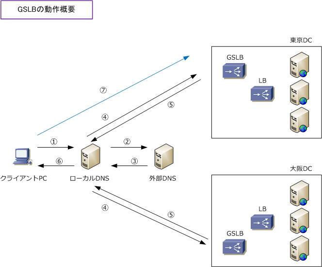

GSLB - Global Server Load Balancing
GSLBとは
GSLB（グローバルサーバロードバラシング）は、複数のサイト間でサーバロードバランスを行う機能です。 例えば、東京DCと大阪DCにサーバを配置して、正常時には東京DCに配置されたサーバにトラフィックを 転送して、東京DCの障害発生時に大阪DCのサーバにトラフィックを転送するようなことが可能となるので ディザスタリカバリ対策ともなります。また、DNSの動きと連動させてユーザのリクエストをトラフィック の少ないサーバへ転送することも可能です。
Webコンテンツを効率よく迅速にユーザに配信するための仕組みのCDN（Content Delivery Network）の インフラ上でもGSLB機能を持つ広域負荷分散装置は導入されます。
GSLBの動作
広域負荷分散装置であるGSLB機器の動作は以下のようなフローとなります。

ローカルDNSが東京DCと大阪DCのGSLBのAレコードを保持している場合、ローカルDNSから外部DNSへの問い合わせ動作は省略。
| 項番 | 説明 |
|---|---|
| 1 | クライアントPCからの www.example.com へのDNSリクエストをローカルDNSへ送信。 |
| 2 | ローカルDNSから外部DNSにAレコードの保持先を問い合わせる。 |
| 3 | 東京DCと大阪DCのGSLBがAレコードを保持していることを返信する。※ |
| 4 | 東京DCまたは大阪DCのGSLBにAレコードを問い合わせる。 |
| 5 | GSLBの設定に応じた適切なサイト（例えば東京DC）のAレコードを返信する。 |
| 6 | ローカルDNSからクライアントPCに、DNSリクエストの回答を送信する。 |
| 7 | クライアントPCは、東京DCにあるLBへのセッションを開始する。 |
DR対策のためのGSLB装置の導入
多重障害に対応できる効果的な機器はGSLB機能を持つロードバランサであり、以下のメリットがあります。
1. サーバを地理的に分散して、負荷分散させることが可能 2. データセンター単位でのフェールオーバーと事業継続性を提供 3. リクエストに応答するサイトまでの距離や優先順位に応じて最適なトラフィック転送を実現